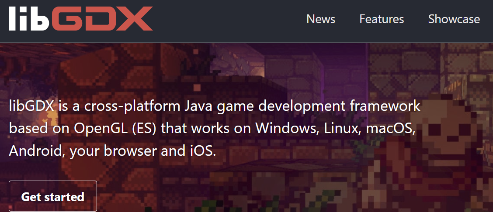
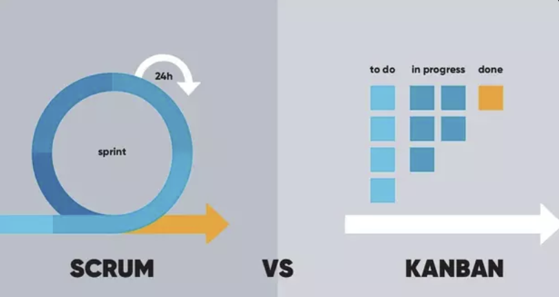
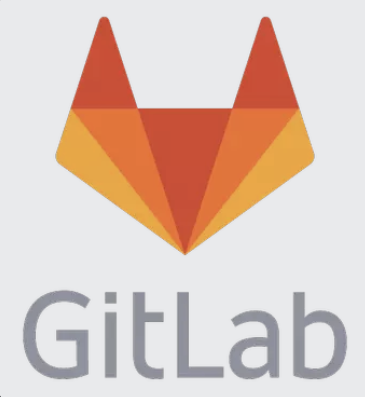

Utviklingen av "Moustache Mania" var en spennende og læringsrik prosess. Her er en oversikt over hvordan vi utviklet spillet.
Vi brukte libGDX rammeverket for å utvikle spillet. Dette rammeverket er kjent for å være kraftig og fleksibelt for utvikling av 2D og 3D spill i Java.
For å sikre en effektiv og smidig utviklingsprosess, benyttet vi Scrum kombinert med Kanban som arbeidsmetodikk. Dette tillot oss å jobbe iterativt og kontinuerlig forbedre vår arbeidsflyt.
Vi brukte Git for versjonskontroll og GitLab som plattform for samarbeid. Dette gjorde det lettere for vårt team på 3 personer å jobbe sammen og holde styr på alle endringer i prosjektet.
Vi holdt en presentasjon hvor vi demonstrerte spillet vårt for medstudenter og lærere. Emil ledet demoen og viste frem spillets ulike funksjoner og mekanikker, inkludert spillerbevegelser, fiender, og nivådesign.
Å jobbe i et team har lært oss viktigheten av delegering av oppgaver og god kommunikasjon. Vi har hatt faste møter hver fredag kl. 10:00, hvor vi diskuterte fremdrift og kommende oppgaver. Åpenhet i teamet har vært avgjørende; vi har hatt lav terskel for å ta opp ting og kontakte hverandre. Vi har opparbeidet tillit og komfort i teamet, noe som har gjort det lettere å jobbe sammen.
En utfordring har vært omstillingen fra å jobbe alene til å jobbe i et team, spesielt siden mange INF-emner har individuelle arbeidsoppgaver. Det å være avhengig av andres kode kan også være utfordrende, men vi har lært å håndtere dette ved å være frampå med å ta tak i oppgaver og få dem gjennomført slik at andre kunne jobbe videre med sin del.
Vi har erfart hvor viktig arbeidsflyt og arbeidsmetodikk er, og har benyttet Scrum og Kanban-board. Scrum har hjulpet oss med å dele oppgaver mellom møtene, slik at alle hadde konkrete mål å jobbe mot. Kanban-boardet har gitt oss en strukturert måte å organisere oppgaver på, med klare tidsfrister og ansvarsfordeling. Dette har vært et nyttig verktøy for å holde oversikt over fremdrift og prioriteringer.
Kommunikasjon har vært nøkkelen, spesielt når noen har vært bortreist. Vi har brukt Discord til å ringe og sende meldinger, noe som har fungert bra. Planlegging og strukturering av arbeid har blitt diskutert i våre ukentlige møter, hvor vi vurderte hva som var gjort og hva som måtte gjøres videre.
Gjennom prosjektet har vi lært å bruke og forholde oss til git-arbeidsflyt. For mange av oss var dette første gang vi virkelig satte oss inn i git og brukte det i et prosjekt. Vi har også frisket opp i Java og MVC-strukturen, og lært å sette oss inn i et nytt rammeverk, LIBGDX, som viste seg å være brukervennlig og nyttig for vår MVC-applikasjon.
Å programmere i team har også vært en ny erfaring, hvor man ikke alltid har full kontroll over hele koden. Vi har brukt CodeTogether, en plugin i IntelliJ, som lar oss kode sammen på en måte som ligner på Google Docs, men for koding. Dette har vært en nyttig hjelpemiddel, spesielt i de tidlige fasene av prosjektet.
Vi kunne hatt en bedre definisjon av brukerhistorier på et tidlig stadium. Selv om vi brukte Kanban-boardet for å holde oversikt over krav og oppgaver, kunne vi ha utnyttet brukerhistoriene bedre som et verktøy for å lage en initiell plan.
Vi kunne også ha satt oss inn i Kanban-boardet tidligere. Det tok litt tid før hele teamet tok det i bruk aktivt, men når vi gjorde det, viste det seg å være et nyttig og lavterskel verktøy for idemyldring og strukturering av prosjektet.
Å sette seg inn i hverandres kode på et tidligere tidspunkt ville også vært nyttig. Selv om vi hadde kontroll over hva hver enkelt gjorde, fikk vi en bedre forståelse av helheten til spillet når vi satte oss inn i hverandres kode mot slutten av prosjektet.
Generelt sett har fordelingen av roller og oppgaver fungert fint, og vi er alle fornøyde med hvordan teamarbeidet har gått. Vi har lært mye om prosjektstyring, kommunikasjon og teknisk utvikling, og ser frem til å ta med oss disse erfaringene videre i våre studier og fremtidige karrierer.